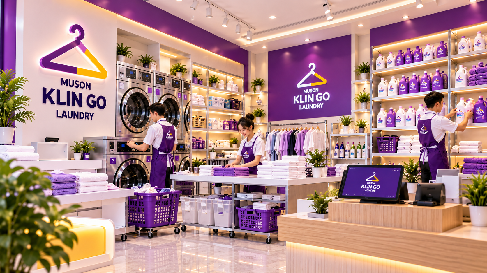

01
Paket Usaha Lengkap
Kebutuhan usaha laundry disiapkan dalam satu rangkaian paket untuk membantu proses persiapan bisnis.
Muson Klin Go menghadirkan solusi usaha laundry yang membantu calon mitra mempersiapkan bisnis dari kebutuhan perlengkapan hingga pendampingan usaha.

Muson Klin Go tidak hanya menyediakan kebutuhan usaha laundry, tetapi menghadirkan rangkaian solusi yang membantu calon mitra mempersiapkan bisnisnya.
Mulai dari perlengkapan usaha, produk laundry, desain dan renovasi outlet, hingga pendampingan bisnis sesuai kebutuhan.
Paket usaha dirancang untuk membantu calon mitra mempersiapkan kebutuhan bisnis laundry secara lebih terarah.
Kebutuhan usaha laundry disiapkan dalam satu rangkaian paket untuk membantu proses persiapan bisnis.
Berbagai perlengkapan pendukung usaha laundry menjadi bagian dari kebutuhan yang dipersiapkan untuk mitra.
Kebutuhan produk laundry menjadi bagian dari solusi usaha yang disiapkan untuk mendukung operasional bisnis.
Persiapan outlet menjadi bagian penting dalam membangun usaha laundry yang sesuai dengan kebutuhan bisnis.
Mitra mendapatkan pendampingan dalam proses persiapan usaha sesuai dengan kebutuhan bisnis.
Sistem pendukung membantu proses pengelolaan dan pemantauan usaha agar berjalan lebih terarah.
Muson Klin Go membantu calon mitra melihat kebutuhan usaha secara lebih menyeluruh, sehingga proses membangun bisnis laundry dapat dipersiapkan dengan lebih terarah.
Konsultasikan kebutuhan usaha dan temukan model paket yang sesuai untuk Anda.